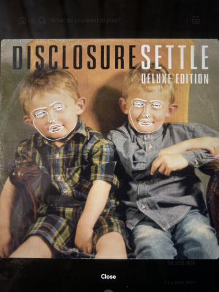

Visual Thinking Strategy Research
Much of what the NY Times's article illustrates with visual thinking and analysis is what I remember doing back in high school...
Read MoreMuch of what the NY Times's article illustrates with visual thinking and analysis is what I remember doing back in high school...
Read More
I'm aware that overlays, or modal windows, have become a nuisance of a UI pattern to users in the form of the “dreaded popup window.”...
Read MoreI can think of 5 main principles behind form design best practices according to Medium's “Best practices for form design” article: accessibility, interaction costs, priming, usability, and user-friendliness...
Read More